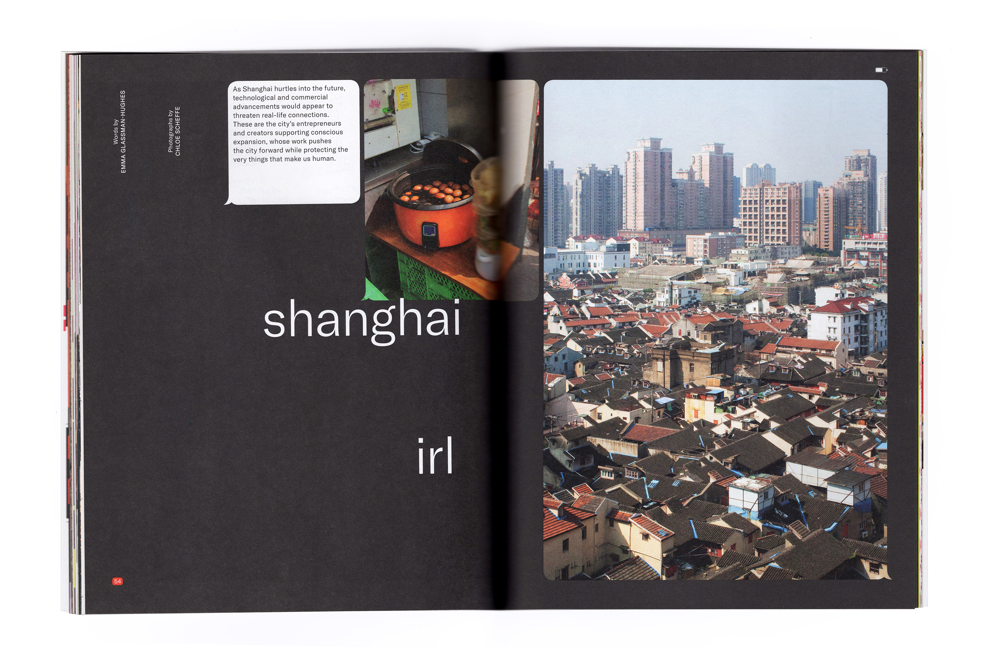
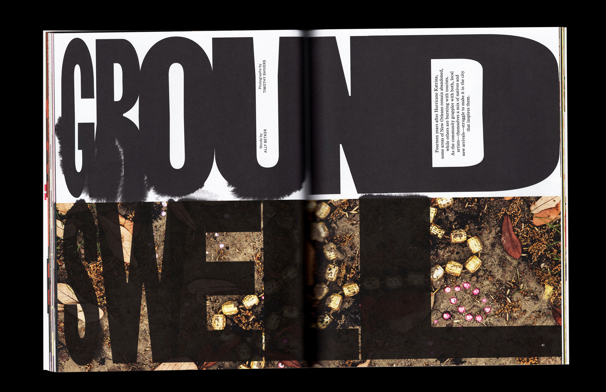
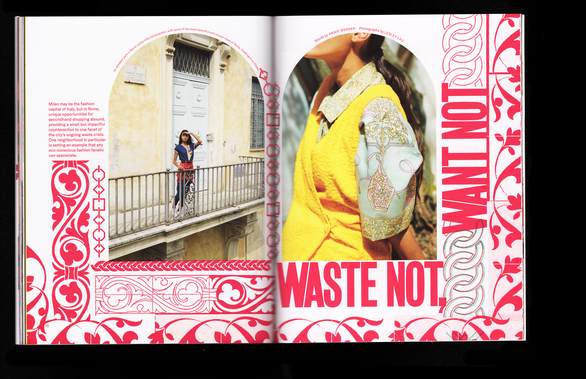

Contents and editor's letter:
A profile of singer and poet Jamila Woods:


On craft beer in San Diego:

Walking a mile in Here readers' shoes:


On hospitality in Shanghai: 

On creativity in New Orleans after Katrina: 

On Tahitian dance:
On vintage shopping in the Eternal City: 


On the ground with a local: